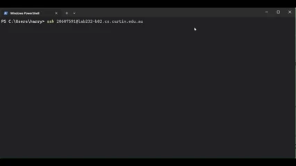
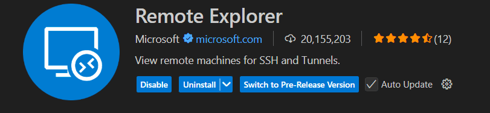

Why bother?
The CS lab machines come pre-loaded with the compilers, libraries, and marker scripts your unit coordinator expects. Your editor, your keyboard shortcuts, your machine, but every file and command lives on Curtin's hardware.
Prerequisites
You'll need three things before any of this works:
- A personal computer running Windows or macOS.
- Internet access — anywhere off-campus is fine, on-campus Wi-Fi is also fine.
- Microsoft Visual Studio Code installed. Download it from
code.visualstudio.comif you haven't.
VPN setup
The lab machines aren't reachable from the open internet — you have to enter Curtin's network first via VPN. The official, supported instructions live inside Curtin's own help system rather than on a public page, so the link rots if I copy it here.
- Log into your OASIS account.
- Open the My Studies tab and find the SupportU Hub.
- Search for
VPN. - Follow the platform-specific guide (Mac or Windows) to install and connect.
At the time of writing the links for the above are: Mac + Windows
SSH connection basics
SSH (Secure Shell) is the protocol that lets you run commands on a remote machine as if you were sat at its keyboard. Curtin's lab machines all follow the same naming pattern, so once you know the shape of the address, you can target any of them.
The command structure is:
ssh [StudentID]@[labID]-[PCID].cs.curtin.edu.au
For example, to log in as student 20607591 on machine a01 in lab 232:
ssh 20607591@lab232-a01.cs.curtin.edu.au

VSCode remote setup
Doing everything in a raw terminal is fine, but the whole point of this guide is to keep VSCode as your editor. Microsoft's Remote — SSH extension makes the lab machine appear as if its filesystem were local.
Step 1 — Install the extension
Open the Extensions panel (Ctrl+Shift+X / ⌘+Shift+X) and install Remote Explorer. It pulls in Remote — SSH and the related Microsoft remote-development extensions automatically.

Step 2 — Add a remote host- Open the Remote Explorer view in the activity bar and switch the dropdown to SSH.
- Click New Remote (the
+icon). - Enter your full SSH command, e.g.
ssh 20607591@lab232-a01.cs.curtin.edu.au. - When asked which SSH config file to update, accept the default. On Windows that's typically
C:\Users\[username]\.ssh\config; on macOS it's~/.ssh/config.
Step 3 — Establish the connection
- Click your new remote in the list — VSCode opens a fresh window for it.
- Choose Linux when prompted for the platform type. (The lab machines run Linux, even though you're on Windows or Mac.)
- Review the SSH fingerprint and accept it.
- Enter your OASIS password when asked.
Step 4 — Start working
You're in. The bottom-left status bar should show the lab machine's hostname in a green pill. Open the integrated terminal (Ctrl+`) and you're now running commands on Curtin's hardware.
From here, clone a Git repo and you're set:
git clone git@github.com:your-org/your-project.git cd your-project
Troubleshooting
The most common failure is the password prompt going weird — it disappears too fast, doesn't accept input, or the connection drops mid-handshake.
- Look bottom-right. When VSCode is mid-handshake it shows a details button in the status bar — click it to open the underlying connection terminal where you can type your password manually.
- Check the VPN. If you got disconnected, every SSH attempt will hang until it times out. Reconnect the VPN before trying again.
- Try a different lab machine. If a specific PC is offline, broken, or rebooting, swapping the host portion of the address (e.g.
lab232-a02instead ofa01) is the fastest fix.
Contact
Stuck on a step or spotted something out of date? Reach out via contact form!